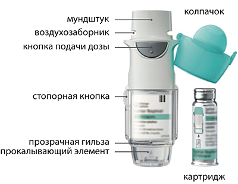
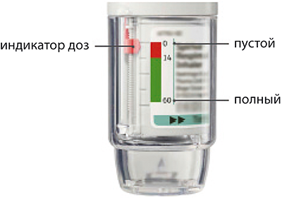
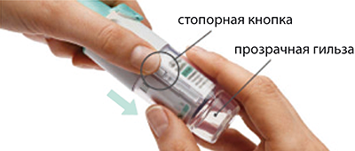
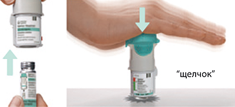
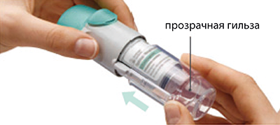
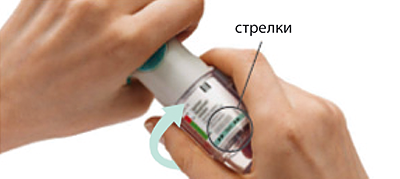
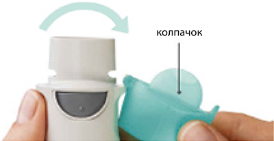
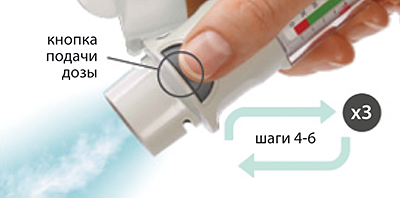
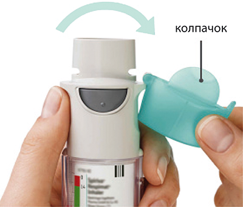
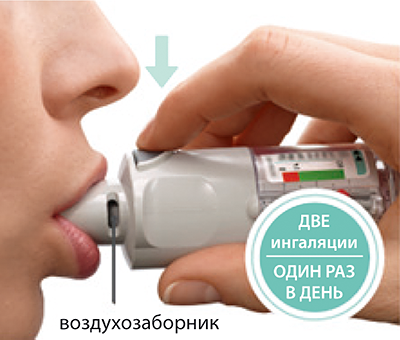

|
 |
| СПИРИВА® РЕСПИМАТ® (SPIRIVA® RESPIMAT®) tiotropium bromide раствор д/ингаляций | ||||||||
|
Клинико-фармакологическая группа: Бронхолитический препарат - блокатор м-холинорецепторов Номер и дата регистрации: ЛП-000890 от 18.10.11 Код ATX: R03BB04 |
Владелец регистрационного удостоверения: зарегистрировано Представительство: | |||||||
Форма выпуска, состав и упаковка Раствор для ингаляций прозрачный бесцветный или почти бесцветный.
Вспомогательные вещества: бензалкония хлорид - 1.105 мкг, динатрия эдетат - 1.105 мкг, хлористоводородная кислота 1М - до pH 2.8-3.0, вода - до 11.05 мг. 60 ингаляционных доз (30 терапевтических доз) - картриджи вместимостью 4.5 мл (1), помещенные в алюминиевый цилиндр, в комплекте с ингалятором Респимат® - пачки картонные. | ||||||||
Описание препарата основано на официально утвержденной инструкции по применению и утверждено компанией-производителем для издания 2018 г. | ||||||||
Фармакологическое действие |
Фармакокинетика |
Показания |
Режим дозирования |
Побочное действие |
Противопоказания |
Беременность и лактация |
Особые указания |
Передозировка |
Лекарственное взаимодействие |
Условия хранения и сроки годности |
Условия реализации
Фармакологическое действие
Тиотропия бромид - м-холиноблокатор длительного действия. Препарат обладает одинаковым сродством к M1-М5 подтипам мускариновых рецепторов. Результатом ингибирования М3-холинорецепторов в дыхательных путях является расслабление гладкой мускулатуры. Бронходилатирующий эффект зависит от дозы и сохраняется не менее 24 ч. Значительная продолжительность действия связана, вероятно, с очень медленной диссоциацией препарата от М3-холинорецепторов; период полудиссоциации существенно более длительный, чем у ипратропия бромида. При ингаляционном способе введения тиотропия бромид, как N-четвертичное производное аммония, оказывает местный избирательный эффект (на бронхи), при этом в терапевтических дозах не вызывает системных м-холиноблокирующих побочных эффектов. Диссоциация от М2-холинорецепторов происходит быстрее, чем от М3-холинорецепторов, что свидетельствует о преобладании селективности в отношении М3 подтипа рецепторов над М2-холинорецепторами. Высокое сродство к рецепторам и медленная диссоциация препарата из связи с рецепторами обусловливают выраженный и продолжительный бронходилатирующий эффект у пациентов с ХОБЛ. Бронходилатация, развивающаяся после ингаляции тиотропия бромида, обусловлена, в первую очередь, местным (на дыхательные пути), а не системным действием. В клинических исследованиях было показано, что применение препарата Спирива® Респимат® 1 раз/сут приводит к значительному улучшению (по сравнению с плацебо) функции легких (ОФВ1 и ФЖЕЛ) в течение 30 мин после использования первой дозы. Улучшение функции легких сохраняется в течение 24 ч при равновесной концентрации. Фармакодинамическое равновесие достигалось в течение одной недели. Спирива® Респимат® значительно улучшал утреннюю и вечернюю пиковую объемную скорость выдоха (ПОСВ), измеренную больными. Применение препарата Спирива® Респимат® приводило к уменьшению (по сравнению с плацебо) использования бронходилататора в качестве средства скорой помощи. Бронходилатирующий эффект препарата сохраняется на протяжении 48 недель применения препарата; признаков привыкания не отмечается. Анализ комбинированных данных двух рандомизированных, плацебо-контролируемых, перекрестных клинических исследований показал, что бронходилатирующий эффект препарата Спирива® Респимат® (5 мкг) после 4-недельного периода лечения был в количественном отношении выше, чем эффект препарата Спирива® (18 мкг). В долгосрочных (12-месячных) исследованиях было установлено, что Спирива® Респимат® значительно уменьшает одышку; улучшает качество жизни; снижает психосоциальное воздействие ХОБЛ и увеличивает активность. Препарат Спирива® Респимат® достоверно улучшал общее состояние здоровья (общий балл) по сравнению с плацебо к концу двух 12-месячных исследований, это различие сохранялось на протяжении всего периода лечения; препарат Спирива® Респимат® значительно уменьшал число обострений ХОБЛ, и увеличивал период до момента первого обострения по сравнению с плацебо. Доказано, что Спирива® Респимат® уменьшает риск обострения ХОБЛ и значительно снижает количество случаев госпитализации. При ретроспективном анализе отдельных клинических исследований было замечено статистически недостоверное увеличение, по сравнению с плацебо, количества случаев смерти у пациентов с нарушениями ритма сердца. Однако эти данные статистически не подтверждены и могут быть связаны с заболеванием сердца. В клинических исследованиях у пациентов, страдающих бронхиальной астмой и продолжающих испытывать симптомы заболевания, несмотря на поддерживающую терапию ингаляционным ГКС, в т.ч. в комбинации с длительно действующим агонистом бета2-адренорецепторов, было установлено, что добавление препарата Спирива® Респимат® к поддерживающей терапии приводило к достоверному улучшению функции легких по сравнению с плацебо, значительно уменьшало число серьезных обострений и периодов ухудшения симптомов бронхиальной астмы, увеличивало период до первого их наступления, приводило к достоверному улучшению качества жизни и увеличению числа пациентов с положительным ответом на поддерживающую терапию. Бронходилатирующий эффект препарата сохранялся на протяжении 1 года применения, признаков привыкания не отмечалось. Фармакокинетика
Тиотропия бромид - четвертичное производное аммония, умеренно растворимое в воде. Тиотропия бромид выпускается в виде раствора для ингаляций, который применяется с помощью ингалятора Респимат®. Приблизительно 40% от величины ингаляционной дозы осаждается в легких, остальное количество поступает в ЖКТ. Некоторые фармакокинетические данные, описанные ниже, были получены при использовании доз, превышающих рекомендуемые для лечения. Всасывание После ингаляции раствора молодыми здоровыми добровольцами установлено, что в системный кровоток поступает около 33% от величины ингаляционной дозы. Прием пищи не влияет на всасывание тиотропия бромида, в связи с тем, что он плохо всасывается из ЖКТ. Абсолютная биодоступность при приеме внутрь составляет 2-3%. Cmax в плазме наблюдается через 5-7 мин после ингаляции. Распределение Связывание препарата с белками плазмы составляет 72%; Vd - 32 л/кг. В равновесном состоянии Cmax тиотропия в плазме у пациентов с ХОБЛ составляет 10.5 пг/мл и быстро снижается. Это указывает на мультикомпартментный тип распределения препарата. В равновесном состоянии базальная концентрация тиотропия в плазме крови составляет 1.6 пг/мл. В равновесном состоянии Cmax тиотропия в плазме крови у пациентов с бронхиальной астмой составляла 5.15 пг/мл и достигалась через 5 мин. Исследования показали, что тиотропия бромид не проникает через ГЭБ. Метаболизм Степень биотрансформации незначительна. Это подтверждается тем, что после в/в введения препарата молодым здоровым добровольцам в моче обнаруживается 74% субстанции тиотропия бромида в неизмененном виде. Тиотропия бромид является эфиром, который расщепляется на этанол-N-метилскопин, и дитиенилгликолевую кислоту; эти соединения не связываются с мускариновыми рецепторами. В исследованиях in vitro показано, что некоторая часть препарата (< 20% от дозы после в/в введения) метаболизируется путем окисления цитохромом Р450 с последующей конъюгацией с глутатионом и образованием различных метаболитов. Данный механизм может тормозиться ингибиторами изоферментов CYP2D6 и 3А4 (хинидин, кетоконазол и гестоден). Таким образом, CYP2D6 и 3А4 участвуют в метаболизме препарата. Тиотропия бромид даже в сверхтерапевтических концентрациях не ингибирует цитохромом Р450 1А1, 1А2, 2В6, 2С9, 2С19, 2D6, 2Е1 или 3А в микросомах печени человека. Выведение Терминальный T1/2 тиотропия бромида после ингаляции составляет от 27 до 45 ч у пациентов с ХОБЛ. У пациентов с бронхиальной астмой эффективный Т1/2 после ингаляции составляет 34 ч. Общий клиренс после в/в введения препарата молодым здоровым добровольцам составлял 880 мл/мин. Тиотропия бромид после в/в введения в основном выводится почками в неизмененном виде (74%). После ингаляции раствора у пациентов с ХОБЛ почечная экскреция составляет 18.6% (0.93 мкг), оставшаяся неабсорбировавшаяся часть выводится через кишечник. В равновесном состоянии у пациентов с бронхиальной астмой 11.9% (0.595 мкг) дозы выводится в неизмененном виде с мочой через 24 ч после приема препарата. Почечный клиренс тиотропия бромида превышает КК, что свидетельствует о его канальцевой секреции. После длительного ингаляционного приема препарата 1 раз/сут пациентами с ХОБЛ равновесное состояние достигается на 7 день; при этом в дальнейшем не наблюдается кумуляции. Тиотропия бромид имеет линейную фармакокинетику в терапевтических пределах после в/в применения, ингаляции сухого порошка и ингаляции раствора. Фармакокинетика в особых клинических случаях У пациентов пожилого возраста отмечается снижение почечного клиренса тиотропия бромида (347 мл/мин у пациентов с ХОБЛ в возрасте до 65 лет и 275 мл/мин у пациентов с ХОБЛ и бронхиальной астмой старше 65 лет). Установлено, что у пациентов с бронхиальной астмой воздействие тиотропия бромида не зависит от возраста пациентов. После ингаляционного применения тиотропия 1 раз/сут в равновесном состоянии у пациентов с ХОБЛ и легкими нарушениями функции почек (КК 50-80 мл/мин) отмечалось небольшое увеличение AUC0-6,ss на 1.8-30% и Cmax, ss по сравнению с пациентами с нормальной функцией почек (КК>80 мл/мин). У пациентов с ХОБЛ и умеренными или значительными нарушениями функции почек (КК<50 мл/мин) в/в применение тиотропия бромида приводило к двукратному увеличению общего воздействия (AUC0-4 ч увеличивалась на 82%, а величина Cmax увеличивалась на 52%) по сравнению с пациентами с ХОБЛ и нормальной функцией почек. Аналогичное повышение концентрации в плазме отмечалось и после ингаляции сухого порошка. У пациентов с бронхиальной астмой и небольшими нарушениями функции почек (КК 50-80 мл/мин) ингаляционное применение тиотропия бромида не приводило к значительному увеличению воздействия в сравнении с пациентами с нормальной функцией почек. Предполагается, что печеночная недостаточность не оказывает значительного влияния на фармакокинетику тиотропия бромида, т.к. тиотропия бромид преимущественно выводится почками и с помощью неферментативного расщепления эфирной связи с образованием производных, которые не обладают фармакологической активностью. Показания
Режим дозирования
Рекомендуемая терапевтическая доза составляет 2 ингаляции спрея из ингалятора Респимат® (5 мкг/терапевтическая доза) 1 раз/сут, в одно и то же время суток. При лечении бронхиальной астмы полный терапевтический эффект наступает через несколько дней. У пациентов пожилого возраста, пациентов с нарушениями функции печени и пациентов с незначительными нарушениями функции почек (КК 50-80 мл/мин) можно использовать препарат Спирива® Респимат® в рекомендуемой дозе. Однако использование препарата у пациентов с умеренными или значительными нарушениями функции почек (КК <50 мл/мин) следует проводить под тщательным контролем. ХОБЛ обычно не встречается у детей. Безопасность и эффективность применения препарата Спирива® Респимат® у детей до 1 года не изучены. Правила применения ингалятора Спирива® Респимат® Перед началом использования препарата следует изучить правила применения ингалятора Спирива® Респимат®. Ингалятор предназначен для использования 1 раз/сут. Каждый раз при его применении следует делать 2 ингаляции.  Как хранить ингалятор Спирива® Респимат® Хранить Спирива® Респимат® в недоступном для детей месте. Не замораживать Спирива® Респимат®. Если ингалятор Спирива® Респимат® не использовался более 7 дней, следует направить его перед применением вниз и нажать один раз на кнопку подачи дозы. Если ингалятор Спирива® Респимат® не использовался более 21 дня, следует повторить шаги 4-6 из раздела "Подготовка к первому использованию" до появления облачка аэрозоля. Затем повторить шаги 4-6 еще три раза. Не использовать ингалятор Спирива® Респимат® после окончания срока годности. Не трогать прокалывающий элемент внутри прозрачной гильзы. Уход за ингалятором Спирива® Респимат® Мундштук и металлическую часть внутри мундштука необходимо чистить влажной тряпочкой или тканью, как минимум, 1 раз в неделю. Любое незначительное изменение цвета мундштука не влияет на работу ингалятора Спирива® Респимат®. Определение момента, когда нужно начать пользоваться новым ингалятором  Ингалятор Спирива® Респимат® содержит 60 ингаляционных доз (т.е. 30 терапевтических доз) при условии применения в соответствии с режимом дозирования (2 ингаляционные дозы 1 раз/сут). Индикатор доз показывает, сколько примерно доз еще осталось. Когда индикатор покажет на красную область шкалы, это означает, что лекарства осталось примерно на 7 дней (14 ингаляционных доз). Когда индикатор доз ингалятора достигнет конца красной шкалы, ингалятор Спирива® Респимат® автоматически заблокируется - больше не может быть получено ни одной ингаляционной дозы (поворот прозрачной гильзы будет невозможен). Через 3 месяца после первого использования ингалятор Спирива® Респимат® следует выбросить, даже если он не полностью использован. Подготовка к первому использованию 1. Снять прозрачную гильзу 
2. Вставить картридж 
3. Установить на место прозрачную гильзу 
4. Повернуть 
5. Открыть 
6. Нажать 
Ежедневное применение Повернуть
Открыть 
Нажать  Сделать медленный полный выдох. Обхватить мундштук губами, не перекрывая воздухозаборники. Делая медленный, глубокий вдох через рот, нажать кнопку подачи дозы и продолжать делать вдох. Задержите дыхание примерно на 10 сек или насколько возможно долго. Для получения второй ингаляционной дозы повторить операции: Повернуть, Открыть, Нажать. Ответы на часто задаваемые вопросы 1. Сложно установить картридж на необходимую глубину Вы случайно повернули прозрачную гильзу до установки картриджа? Откройте колпачок, нажмите на кнопку подачи дозы, затем вставьте картридж. Вы вставляете картридж широким концом? Вставьте картридж узким концом в ингалятор. 2. Невозможно нажать на кнопку подачи дозы Повернули ли Вы прозрачную гильзу? Если нет, поверните прозрачную гильзу одним непрерывным движением до щелчка (пол-оборота). Индикатор доз ингалятора Спирива® Респимат® указывает на ноль? Ингалятор Спирива® Респимат® блокируется после выпуска 60 ингаляционных доз (30 терапевтических доз). Подготовьте и используйте новый ингалятор Спирива® Респимат®. 3. Невозможно повернуть прозрачную гильзу Вы уже повернули прозрачную гильзу? Если прозрачная гильза уже повернута, следуйте по шагам "Открыть" и "Нажать" в разделе "Ежедневное применение" для получения ингаляционной дозы. Индикатор доз ингалятора Спирива® Респимат® указывает на ноль? Ингалятор Спирива® Респимат® блокируется после выпуска 60 ингаляционных доз (30 терапевтических доз). Подготовьте и используйте новый ингалятор Спирива® Респимат®. 4. Индикатор доз ингалятора Спирива® Респимат® достигает нуля слишком быстро Использовали ли Вы Спирива® Респимат® в соответствии с Режимом дозирования (две ингаляционные дозы 1 раз/сут)? Препарата Спирива® Респимат® хватает на 30 дней при использовании двух ингаляций 1 раз/сут. Поворачивали ли Вы прозрачную гильзу до установки картриджа? Индикатор доз считает каждый поворот прозрачной гильзы вне зависимости от того, установлен картридж или нет. Выпускали ли Вы ингаляционные дозы в воздух для проверки работы Спирива® Респимат®. После подготовки ингалятора к использованию не требуется ежедневной проверки ингаляции. Вы установили картридж в использованный ингалятор Спирива® Респимат®? Всегда устанавливайте новый картридж в новый ингалятор Спирива® Респимат®. 5. Ингалятор Спиолто® Респимат® выпускает ингаляционные дозы автоматически Был ли открыт колпачок, когда Вы поворачивали прозрачную гильзу? Закройте колпачок, затем поверните прозрачную гильзу. Нажимали ли Вы кнопку подачи дозы во время поворота прозрачной гильзы? Закройте колпачок так, чтобы кнопка подачи дозы была закрыта, затем поверните прозрачную гильзу. Останавливались ли Вы во время поворота прозрачной гильзы, до звука щелчка? Поверните прозрачную гильзу одним непрерывным движением до щелчка (пол-оборота). 6. Ингалятор Спирива® Респимат® не выпускает ингаляционную дозу Установили ли Вы картридж? Если нет, установите картридж. Вы повторили шаги "Повернуть", "Открыть", "Нажать" менее трех раз после установки картриджа? Повторите шаги "Повернуть", "Открыть", "Нажать" три раза после установки картриджа, как описано в разделе "Подготовка к первому использованию", шаги 4-6. Индикатор доз ингалятора Спирива® Респимат® указывает на ноль? Если индикатор доз указывает на ноль, значит ингалятор пуст и заблокирован. Не снимайте прозрачную гильзу и не вынимайте картридж после подготовки ингалятора к использованию. Всегда устанавливайте новый картридж в новый ингалятор Спирива® Респимат®. Побочное действие
Многие из перечисленных ниже нежелательных реакций могут быть обусловлены м-холиноблокирующими свойствами препарата. Побочные реакции были выявлены на основании данных, полученных при проведении клинических исследований и отдельных сообщений в течение пострегистрационного использования препарата. Определений категорий частоты побочных реакций: очень часто (≥1/10), часто (≥1/100, <1/10), нечасто (от ≥1/1000, <1/100), редко (≥1/10 000, <1/1000), очень редко (<1/10 000), частота неизвестна (частота не может быть оценена на основании имеющихся данных). Со стороны обмена веществ: частота неизвестна - дегидратация. Со стороны нервной системы: нечасто - головокружение; редко - бессонница. Со стороны органа зрения: редко - повышение внутриглазного давления, глаукома, нечеткое зрение. Со стороны сердечно-сосудистой системы: редко - мерцательная аритмия, тахикардия (включая суправентрикулярную тахикардию), ощущение сердцебиения. Со стороны дыхательной системы: нечасто - кашель, фарингит, дисфония; редко - носовое кровотечение, бронхоспазм, ларингит; частота неизвестна - синусит. Со стороны пищеварительной системы: часто - незначительная преходящая сухость слизистой оболочки глотки; нечасто - запор, кандидоз полости рта; редко - дисфагия; редко, гастроэзофагеальный рефлюкс, гингивит, глоссит; частота неизвестна - стоматит; кишечная непроходимость, включая паралитическую кишечную непроходимость. Со стороны кожи и подкожных тканей: редко - кожные инфекции и язвы на коже, сухость кожи. Аллергические реакции: нечасто - сыпь, зуд; редко - ангионевротический отек, крапивница; частота неизвестна - гиперчувствительность, включая реакции немедленного типа. Со стороны костно-мышечной системы: частота неизвестна - отечность суставов. Со стороны почек и мочевыделительной системы: нечасто - дизурия, задержка мочи (чаще у мужчин с наличием предрасполагающих факторов); редко - инфекция мочевыводящих путей. Противопоказания
С осторожностью препарат следует применять при закрытоугольной глаукоме, гиперплазии предстательной железы, обструкции шейки мочевого пузыря. Применение при беременности и кормлении грудью
Данные о влиянии препарата Спирива® Респимат® на беременность ограничены. В доклинических исследованиях при изучении репродуктивной токсичности не получено указаний на прямое или опосредованное неблагоприятное влияние препарата. В качестве меры предосторожности предпочтительно воздержаться от применения препарата Спирива® Респимат® при беременности. Клинических данных о влиянии тиотропия бромида в период грудного вскармливания нет. Препарат не следует применять у беременных или кормящих грудью женщин, если потенциальная польза для матери не превышает потенциальный риск для плода и ребенка. На период применения препарата необходимо прекратить грудное вскармливание. Особые указания
Препарат Спирива® Респимат®, как бронходилататор, применяемый 1 раз/сут для поддерживающего лечения, не следует применять в качестве начальной терапии при острых приступах бронхоспазма или для устранения остро возникающих симптомов. В случае развития острого приступа используются быстродействующие бета2-агонисты. Препарат Спирива® Респимат® не следует применять для лечения бронхиальной астмы в качестве терапии первой линии. Пациентам следует рекомендовать на фоне приема препарата Спирива® Респимат® продолжать противовоспалительную терапию (например, ингаляционными ГКС), даже если симптомы уменьшатся. После применения препарата могут развиваться немедленные реакции повышенной чувствительности. Ингаляция препарата может вызывать бронхоспазм. При умеренной или выраженной почечной недостаточности (КК ≤50 мл/мин) прием препарата следует вести под тщательным наблюдением, как и при приеме всех лекарственных препаратов, экскретируемых преимущественно почками. Перед началом применения пациенты должны быть ознакомлены с инструкцией по применению. Не следует допускать попадания раствора или аэрозоля в глаза. Боль или дискомфорт в глазах, нечеткое зрение, зрительные ореолы в сочетании с покраснением глаз, отек конъюнктивы и роговицы могут быть симптомами острой закрытоугольной глаукомы. При развитии любой комбинации этих симптомов следует немедленно обратиться к специалисту. Глазные капли, обладающие миотическим действием, не считаются эффективным лечением. Спирива® Респимат® не следует использовать чаще чем 1 раз/сут. Картриджи Спирива® следует использовать только с ингалятором Респимат®. Влияние на способность к управлять транспортными средствами и механизмами Исследования по изучению влияния на способность управлять транспортными средствами и механизмами не проводились. Следует соблюдать осторожность при выполнении данных видов деятельности, т.к. возможно развитие головокружения или нечеткости зрения. Передозировка
При применении препарата в высоких дозах возможны проявления м-холиноблокирующего действия. После 14-дневного ингаляционного применения тиотропия бромида в дозах, достигавших 40 мкг, у здоровых лиц не наблюдалось значимых неблагоприятных явлений, кроме чувства сухости слизистых оболочек носа и ротоглотки, частота которых зависела от величины дозы (10-40 мкг/сут). Исключение составляло отчетливое снижение саливации, начиная с 7 дня применения препарата. В шести долгосрочных исследованиях у пациентов с ХОБЛ при ингаляционном применении раствора тиотропия бромида в суточной дозе 10 мкг в течение 4-48 недель не наблюдалось существенных нежелательных явлений. Лекарственное взаимодействие
Хотя специальных исследований лекарственного взаимодействия не проводилось, тиотропия бромид использовали совместно с другими препаратами, применяющимися для лечении ХОБЛ, включая симпатомиметические бронходилататоры, метилксантины, ГКС для приема внутрь и ингаляционного применения, антигистаминные препараты, муколитики, модификаторы лейкотриенов, кромоны, анти-IgE препараты; при этом клинических признаков лекарственного взаимодействия не отмечалось. Совместное применение с длительнодействующими бета2-агонистами, ингаляционными ГКС и их комбинациями не влияет на действие тиотропия Длительное совместное применение тиотропия бромида с другими м-холиноблокирующими препаратами не изучалось. Поэтому долгосрочное совместное применение препарата Спирива® Респимат® с другими м-холиноблокирующими препаратами не рекомендуется. |
||||||||
Вернуться наверх |
||||||||

Copyright © Справочник Видаль «Лекарственные препараты в России», Москва, Россия